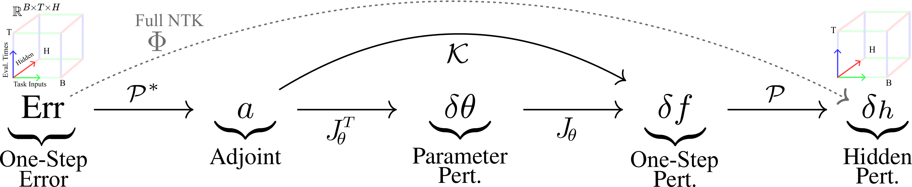

Unpacking K-P Flow:
The Geometry of GD Learning in General Recurrent Models
| Links | |
| Arxiv Pre-Print | Pytorch Package |
Synopsis
This blog post provides a more intuitive exploration of parts our main paper, linked above, which broadly explores the gradient flow of general recurrent models.
An efficient and in-development package with examples is linked above. See accompanying blog posts on my main page exploring specific aspects of the code.
- Table of Contents
- Broader Motivation and Prior Work
- Introduction
- Methods
- Examples and Intuition
- Results
TLDR
Q: Can we track the evolution of a dynamical system trained by Gradient Descent (GD)?
A: Yes, but the NTK involves tensor calculus. We need new geometric intuition and dynamical tools.

Broader Motivation and Prior Work
Recurrent Models in Neuroscience and ML Recurrent models in machine learning are a powerful tool that can mimic sequential behavior when fit to data. Practically, this can be used to solve a variety of tasks in deep learning and control. Furthermore, such models can be used as a proxy for understanding how circuity in the brain forms so-called neural manifolds, consisting of low-dimensional dynamical motifs such as fixed points and attractors. In multi-task learning contexts, recurrent models give insights solving complex continual learning or compositional problems.
Many, Many Recurrent Architectures Classically, in control, the most common recurrent model is the Linear Time Invariant (LTI) controller, which is a linear dynamical system that can be trained on a variety of problems and is well analyzed theoretically. In deep learning, the most classical model is the Recurrent Neural Network (RNN), with non-linear time-stepping dynamics. Building on this model are GRUs and LSTMs, which train better, avoiding pitfalls of vanishing and exploding gradients. More recently, there are many diverse recurrent architectures in deep learning, including those with dynamical synapses (MPNs) or State-Space Models (SSMs). Outside of these contexts, we can look to physics and neuroscience to see a very wide range of complex network-based recurrent dynamical systems, such as spin-glasses, Hodgkin-Huxley biophysical neural networks, Hopfield neural networks, energy-based models, and many, many more.
Training Recurrent Models In control and deep learning, the primary means of "training" such recurrent models is dynamically adapting their parameters (typically weights of the recurrent or output connections) with (potentially stochastic or accelerated) Gradient Descent (GD). More specifically, on discrete models like RNNs or GRUs, we use Backpropagation Through Time (BPTT) to efficiently compute gradients, which are then used to incrementally adjust the parameters. In optimal control or continuous Neural ODEs, this may be instead be labeled as the adjoint method, but it was proven long ago that BPTT and the adjoint method are exactly the same thing.
Tracking Trained Dynamics In this study, we investigated how the dynamics of a recurrent model trained with GD evolve. More specifically, we define operators that, when composed together, define the hidden-state gradient flow of the a general parameterized recurrent dynamical system.
Introduction
Gradient Descent (GD) Setup
A General Recurrent Model As described, we consider a recurrent dynamical system, trained with GD to approximately mirror target trajectories given a variety of time-varying inputs. We let \(h(t)\) denote the model's hidden state, and \(x(t)\) denote a sample task input. The variable \(t\) denotes the forward pass time and exists in a given time range \([0, t_{end}]\). During the forward-pass inference, an individual task input is chosen, \(x(t)\), from a given distribution of all task inputs; then, the model state \(h(t)\) is simulated from an initial state \(h_0\) to time \(t_{end}\), driven by the input \(x(t)\). The dynamics can be continuously specified or discretely with little change in the mathematics below, so we use assume time is continuous. In this case, the model dynamics take the form: $$\frac{d}{dt} h(t) = f(h(t), x(t), \theta), \text{ for } t \in (0, t_{end}]; \text { with } h(0) = h_0.$$ Here, \(\theta\) denote the model parameters (e.g., weights and biases) and \(f\) models the tangential dynamics of the hidden state.
Defining the Task For each input \(x(t)\) we associate and desired output target \(y^*(t)\). Furthermore, we define an output function of the hidden state, e.g., the simple affine map: $$y(t) = W_{out} z(t) + b_{out}.$$ Then, the goal is to minimize a loss function \(\ell(y(t), y^*(t))\) on all possible inputs and at all times. In particular, we define the loss as an average (denoted by \(\langle \cdot \rangle_{x,t}\)): $$L := \langle \ell(y(t), y^*(t)) \rangle_{x,t}.$$
Training the Model with GD The goal is to minimize the loss \(L\) by tuning the parameters of the model, \(\theta\). To do so, we want to find the best parameters: $$\theta^* := \arg \min_\theta L.$$ This is typically done by GD, where the parameters are iteratively updated by travelling down the steepest direction in Euclidean parameter space. Specifically, letting \(\delta \theta\) be the perturbation to the parameters at a particular instant in GD, it is given by: $$\delta \theta := -\eta \nabla_\theta L.$$ Here, \(\eta\) is a learning rate, which I'll just assume is \(1\) throughout the rest of this blog for simplicity.
The Hidden State GD Flow and NTK
Tracking the GD Flow We would like to track certain quantities as they evolve under GD. The simplest quantity to track are the parameters, defining the so-called parameter GD flow. However, this quantity is ultimately a proxy for the actual dynamics of the hidden state, which also evolves as GD trains the model. We would like to track how this quantity itself evolves in a meaningful way. The hidden state dynamics can be envisioned as a large vector field, conditioned on the particular input you give the model.
Now, before getting into the details of the objects involved, the general idea (which turns out to work correctly) is simply as follows. Firstly, define the Instantenous Error Signal, Err, by $$\text{Err} := \nabla_{z} \ell(y, y^*).$$ For example, when we use a squared error loss, \(\ell(y, y^*) := \| y - y^*\|\), the error signal is \(\text{Err} = W_{out}^T (y - y^*)\), a simple residual projected onto the row space of \(W_{out}\). Define a parameter Jacobian \(J_\theta := \nabla_theta h\). Then, by the chain rule, $$\nabla_\theta L = J_\theta^T \text{Err}.$$ Given this parameter change, the hidden state itself will approximately change by $$\nabla h = -J_\theta \cdot \nabla_\theta L = -J_\theta \cdot J_\theta^T \text{Err}.$$ The outer product \(J_\theta \cdot J_\theta^T\) is referred to as the Neural Tangent Kernel (NTK).
The NTK is a tensor operator In the classical NTK literature, the model considered is a multi-layer perceptron neural network with scalar output, so there is no notion of time, \(t\), and no spatial (hidden unit) dimension. Hence, the NTK is a matrix comparing alignment based on the task inputs, \(x\). In our case, however, the NTK is actually a tensor operator. In a Pytorch implementation, for example, the hidden state will have the form [B, T, H] over batch inputs, \(x\), times, \(t\), and hidden units. The quantity \(J_\theta\) thus has the form [B, T, H, M], where \(M\) is the size of the flattened model parameters. Finally, \(\Theta\) is an linear operator on the space of tensors of the form [B, T, H]. If we discretize it, it will be a massive matrix of shape B*T*H by B*T*H. If indexed in Pytorch, the of \(\Phi\) are given by $$\Phi: \mathbb{R}^{B\times T \times H} \rightarrow \mathbb{R}^{B \times T \times H}$$ $$\Phi[b, t, h, b_0, t_0, h_0] = \sum_{m=1}^M J_\theta[b, t, h, m] J_\theta[b_0, t_0, h_0, m].$$ Formally, this is a tensor product on \(J_\theta\) where the parameter dimension is contracted (see my blog post going into more depth on tensor calculus). The fact that the NTK is a tensor operator for such general recurrent models has pros and cons. Pros include that it encapsulates a massive amount of information, including insights into GD learning at very granular levels given by eigenfunctions. Indeed, in the next section I'll discuss some of the ways we can reduce the operator to generate different perspectives on the GD learning. However, this is also a since it makes the whole object harder to understand, requiring some tensor math. Another major con is the massive size of this object. Even for very small problems it can be huge (e.g. 100 neurons, batch size 100 and 100 forward-pass times results in \(\Phi\) being 1m by 1m when discretized). Thus, advanced matrix-free methods that do not actually compute the full discretized operator are needed to work with \(\Phi\) (see my blog using trace estimation for the NTK, for example).
Working with Tensor Operators
As mentioned in the prior section, the full empirical NTK for recurrent models is a linear operator on a space of 3-tensors (discretely of shape [B, T, H]). In this section, I'll discuss building some more intuition and practical tools for working with such operators. Indeed, it may be tempting to think that working with such a massive, complex objective is overcomplicating things. However, this object exactly matches Pytorch without any simplication and can be simplified after-the-fact, instead of simplifying at the outset.
AReduced Views A simple way to work with this complex operator is to reduce it into simpler "views". The operator itself informs how gradient updates to the hidden state are structured over time, batch inputs and hidden units, which is a ton of information. Sometimes, we would like to know in what subspaces the updates will reside, on average, without consider time or batches. Or, as another example, we want to consider where most of the updates will be concentrated as a signal over time and batches, without thinking about the individual hidden units.
To generate such perspectives, we define a method of reducing the operator over particular axes. getting
Full Operator SVD